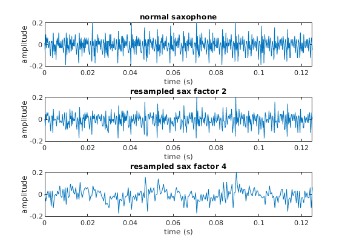

[sax, Fs] = audioread('Saxophone.wav');
nyq_sax = sax(1:2:length(sax));
nyq_Fs = Fs/2;
q_sax = sax(1:4:length(sax));
q_Fs = Fs/4;
section = sax(24000:25000);
section2 = nyq_sax(24000/2:25000/2);
section4 = q_sax(24000/4:25000/4);
ts = 0:1/Fs:(length(section) - 1) *1/Fs;
ts2 = 0:1/(Fs/2):(length(section2) - 1)*1/(Fs/2) ;
ts4 = 0:1/(Fs/4):(length(section4) - 1)*1/(Fs/4) ;
high = max(abs(section));
high2 = max(abs(section2));
high4 = max(abs(section4));
subplot(3,1,1);
plot(ts, section);
title('normal saxophone');
xlim([0 ts(end)]);
xlabel('time (s)');
ylabel('amplitude');
ylim([-1*high high]);
subplot(3,1,2);
plot(ts2, section2);
title('resampled sax factor 2');
xlim([0 ts2(end)]);
xlabel('time (s)');
ylabel('amplitude');
ylim([-1*high2 high2]);
subplot(3,1,3);
plot(ts4, section4);
title('resampled sax factor 4');
xlim([0 ts4(end)]);
xlabel('time (s)');
ylabel('amplitude');
ylim([-1*high4 high4]);
saveas(gcf, 'sax_comparison.png');
[newS,newFs] = resampleSound(sax,Fs,7);
